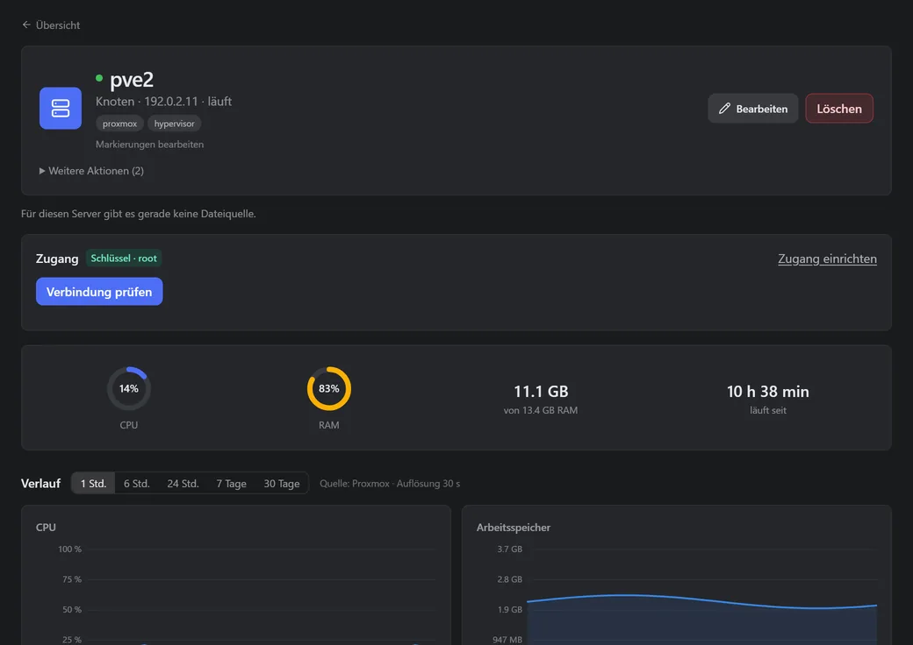
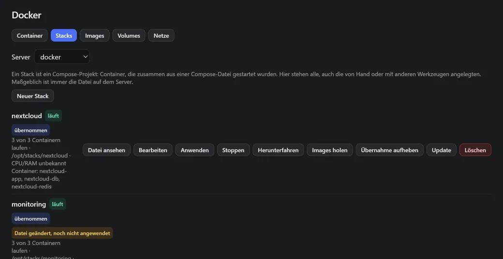
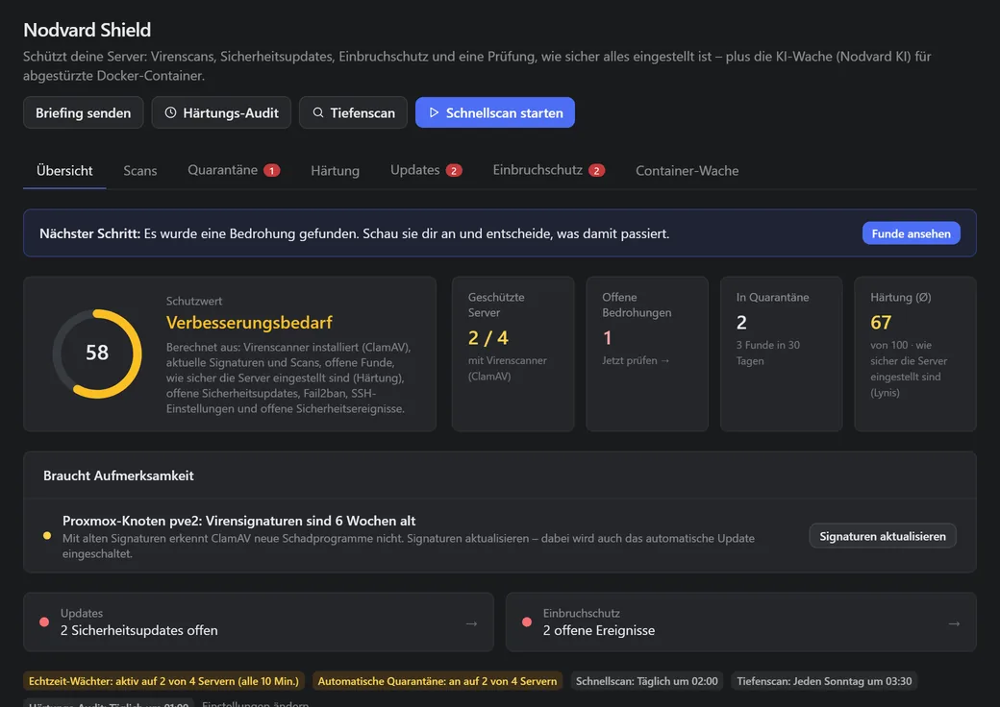
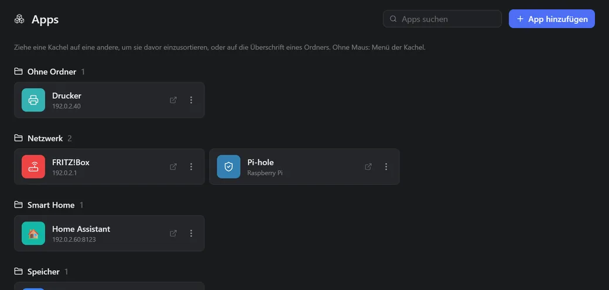
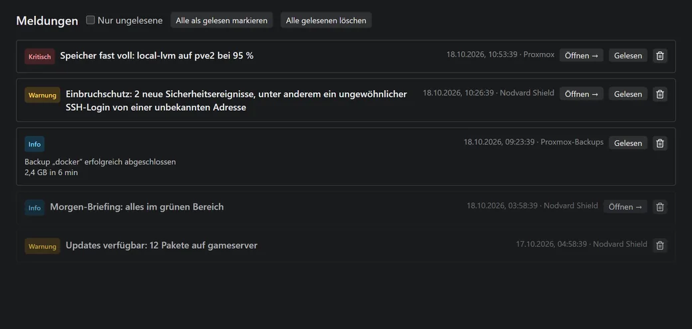

Funktionen von Nodvard Deck: Proxmox, Docker, Shield und Backups
Nodvard Deck ist ein selbst gehostetes Homelab-Dashboard (Beta, Quelltext einsehbar, kostenlos für den privaten Gebrauch). Hier steht alles, was Deck heute kann. Bereiche mit dem Hinweis Beta sind neuer und noch nicht so lange erprobt wie der Rest.
Server und Proxmox
Jeder Server bekommt eine eigene Seite mit Zustand, Auslastung und Aktionen. Neue Server trägst du in der Oberfläche per SSH ein, auch nur mit Benutzer und Passwort.
- CPU, RAM, Platten und Laufzeit live
- Betriebssystem, fehlgeschlagene Dienste und offene Updates per SSH
- Terminal und Dateimanager im Browser
- Proxmox: Knoten, VMs und LXC starten und stoppen, Konsole im Browser, Snapshots, Hardware und Speicher
- Festplatten-Zustand, ZFS und Temperatur der Proxmox-Knoten
- Hardware eines Gasts ändern: Kerne, RAM und Ballon-Minimum. Manches greift erst nach einem Neustart
Proxmox brauchst du nicht. Deck kommt auch mit einem Raspberry Pi, einem NAS oder ein paar Docker-Hosts klar. Proxmox und Docker in einem Dashboard.
Was auf deinen Servern landet: Kein Agent und kein eigener Dienst, Deck kommt per SSH. Für Aufgaben, die root brauchen, legt die Einrichtung ein paar kleine Hilfsskripte unter /usr/local/lib/nodvard-deck an. Deck ruft sie per sudo auf. Jedes kann nur seine festen Befehle und prüft selbst, was es bekommt. Was jedes Hilfsskript darf.

Docker
Hier siehst du die Container all deiner Server zusammen, mit Zustand, Logs und Konsole. Stacks aus Compose-Dateien bedienst du als Ganzes.
- Starten, stoppen, neu starten, Logs mit Suche, Konsole und Details
- Image-Updates finden und einspielen. Das alte Image hebt Deck als Sicherung auf. Startet der neue Container nicht, geht Deck von selbst zurück. Nur bei Datenbanken macht es das nicht.
- Compose-Dateien als Text oder im Formular bearbeiten. Vor dem Speichern prüft Docker Compose die Datei auf dem Server.
- Neue Stacks anlegen, auch aus Vorlagen für Uptime Kuma, Vaultwarden, Nginx Proxy Manager und Gitea
- Ganze Stacks aktualisieren und zurück zur vorigen Version (Rollback), auf Wunsch mit Sicherung der Volumes vorher
- Stacks direkt aus einem Git-Repository holen. Vorher zeigt Deck dir, welche Dateien neu sind oder sich ändern. Die Volumes lassen sich vorher sichern, und mit „Zurück zum Stand davor“ kommst du wieder zum alten Stand. Zugänge für private Repositorys liegen im Tresor. Auf Wunsch prüft Deck nach Zeitplan, ob es einen neuen Stand gibt, und schickt eine Nachricht.
- Umzug einfacher Stacks aus Portainer. Deck nimmt Compose-Datei und Variablen mit, deine Volumes bleiben, wo sie sind.
- Netze anlegen, wahlweise nur intern, und Container verbinden oder trennen
- Images per Name und Tag holen, private auch mit der Anmeldung unter Registries
- Eigene Compose-Dateien als Vorlage speichern. Feste Passwörter und Tokens lehnt Deck dabei ab.
- Container nach Zustand, Name, CPU oder RAM sortieren
- Neu in 0.14: Der Reiter Images zeigt die Gesamtgröße aller Images und entfernt nach Rückfrage und Freigabe ungenutzte Images ohne Namen. Danach steht da, wie viele weg sind und wie viel Platz frei wurde.
- Volumes und Netze aufräumen
- Neu in 0.14: Beim Stoppen eines Stacks wählst du, ob die Container bleiben oder entfernt werden. Die Volumes bleiben.
Du willst nur Container verwalten? Den Docker-Teil gibt es einzeln als Nodvard Dock (mit Umzug von Portainer).

Nodvard Shield
Shield schaut regelmäßig auf deine Linux-Server und sagt dir, was es findet. Schadsoftware schiebt es ab Werk von selbst in die Quarantäne. Das lässt sich abschalten, dann entscheidest du jedes Mal selbst.
- Virenscan mit ClamAV als Schnellscan, Tiefenscan oder nach Zeitplan, mit Quarantäne. Neue Dateien in typischen Ordnern wie
/tmpoder/homeprüft Shield standardmäßig alle 10 Minuten. Echte Echtzeit-Prüfung (clamonacc) braucht auf dem Server rund 1 GB RAM. - Härtungs-Check mit Lynis
- Update-Zentrale mit den offenen Sicherheitsupdates je Server
- Einbruchschutz: ungewöhnliche SSH-Logins und offene Ports. Die von Fail2ban gesperrten Adressen je Server ansehen, entsperren oder eine Adresse von Hand sperren. Neu in 0.14: Fail2ban je Server einstellen, mit Sperrdauer, Fundzeit, Versuchen, Ausnahmen und ausgewählten Schutzregeln. Vor dem Aktivieren prüft Deck die Einstellung. Bestehende Server richtest du dafür einmal neu ein.
- Datei-Wächter für wichtige Systemdateien
- Morgen-Briefing mit dem Stand der Nacht
- Neu in 0.14: Wochenbericht mit zwölf Wochen Verlauf je Server (Updates, Virenscan, Fail2ban-Sperren und Lynis-Wert), dazu eine Kurzfassung über deine Meldungskanäle
ClamAV, Lynis oder Fail2ban fehlen noch? Dann installiert Shield sie per Knopf, sobald du es freigibst. Mit dem Hilfsskript oder sudo-Rechten auf dem Server sieht Shield am meisten.

Backups
Deck schaut, ob deine Backups wirklich laufen. Und sich selbst sichert es auch.
- Alle Proxmox-Backups in einer Liste, mit Warnung, wenn eins fehlt oder fehlgeschlagen ist
- Backup-Jobs anlegen und bearbeiten
- Eine VM oder einen LXC aus dem Backup als Kopie wiederherstellen, das Original bleibt unberührt
- Vor dem Update eines Stacks auf Wunsch die Docker-Volumes sichern
- Vor jedem Update, das die Datenbank umbaut, legt Deck eine Kopie an, dazu eine Sicherung zum Herunterladen und Wiederherstellen

Apps
Eine Startseite für die Dienste in deinem Netz. Jede App bekommt eine Kachel mit Adresse und Symbol, und die Kacheln sortierst du in Ordner.
- Container mit Weboberfläche findet Deck auf deinen Docker-Servern von selbst
- Eigene Apps fügst du mit Adresse und Symbol hinzu
- Die Reihenfolge änderst du per Ziehen oder über das Menü der Kachel

Integrationen
Deck holt sich Zustand und Zahlen aus deinen Diensten und zeigt sie als Kachel und auf einer eigenen Seite. Die meisten lesen nur und ändern nichts, das steht dabei. Bei Pi-hole und Nginx Proxy Manager gibt es auch Aktionen, die du freigibst. Nextcloud und ntfy laufen schon lange im Dauerbetrieb. Der Rest ist Beta, funktioniert also, ist aber noch nicht so lange erprobt.
Zusatz-Module, wenn du sie brauchst
Ab Werk sind alle aus, damit nichts herumsteht, was du nicht brauchst. Einschalten kannst du sie einzeln:
- Skripte für einen oder viele Server, auch nach Zeitplan
- Dokumente: Ablage mit Texterkennung und Volltextsuche
- Inventar mit Erinnerung vor dem Ende einer Garantie
- Gameserver (Beta)
Tresor
Zugangsdaten für deine Server und Dienste speichert Deck verschlüsselt im Tresor.
- Für Passwörter, API-Tokens und SSH-Schlüssel
- Auf Wunsch erzeugt Deck für jeden Server einen eigenen SSH-Schlüssel. Der geheime Teil bleibt im Tresor.
- Geheime Werte in Skripten holt Deck erst beim Ausführen aus dem Tresor
- Jedes Modul kommt nur an die Zugangsdaten, für die es freigegeben ist
- Verschlüsselt mit Fernet (AES-128 im CBC-Modus mit HMAC-SHA256). Der Schlüssel liegt getrennt von der Datenbank in einer eigenen Datei im Datenordner von Deck. Schütze deshalb auf dem Host den Zugriff auf das Volume
/app/data.
Hinweise zum sicheren Betrieb (Englisch). Das Wichtigste vorweg: Stell Deck nicht direkt ins Internet, und schalte für jedes Konto Zwei-Faktor ein.
Freigaben und Konten
Bevor Deck etwas ändert, fragt es nach, und jede Aktion trägt eine Stufe, die zeigt, wie riskant sie ist. Was ohne Rückfrage durchgehen darf, stellst du selbst ein, mit der Automatik bis zu einer Risikostufe oder mit einer Dauerfreigabe. Befehle, die nie laufen sollen, sperrst du mit einer eigenen Sperrliste.
- Jede Aktion steht im Protokoll
- Benutzer mit Rollen und Rechten
- Anmeldung mit Zwei-Faktor-Code aus einer App
- Eine Bremse gegen Passwort-Raten bei der Anmeldung
- Updates per Knopf gibt es nur für signiert freigegebene Versionen. Der Knopf braucht den Update-Helfer, den du mit einer eigenen Compose-Datei bewusst einschaltest.
- Name, Logo und Farben von Deck kannst du selbst anpassen
- Bei einer neuen Version von Deck steht, was sie bringt, etwa ein Sicherheitsupdate oder Fehlerbehebungen
Meldungen
In den Meldungen landet alles, worum du dich kümmern solltest, etwa eine volle Platte, ein fehlgeschlagenes Backup, offene Updates oder ein Fund von Shield.
- Push aufs Handy über ntfy, Telegram, Discord, Gotify, Pushover, Matrix, Slack, Mattermost oder eine eigene Apprise-API
- Für jeden Kanal eine eigene Mindest-Stufe
- Deck lässt sich als App auf den Startbildschirm des Handys legen
- Am Handy stehen Listen als Karten statt als abgeschnittene Tabellen

Probier es mit Beispieldaten aus
Nach drei Befehlen läuft Deck. Mit den Beispieldaten siehst du dich erst mal um, bevor du deine eigenen Server einträgst. Die Bilder auf dieser Seite kommen übrigens auch daher.